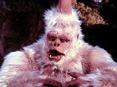
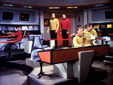
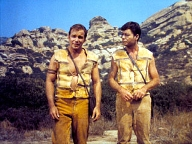
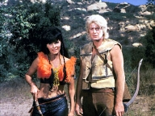
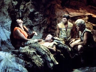

|
MANCHETE
DO EPISDIO
Alegoria clssica trs Guerra
do Vietn ao debate
Episdio
anterior | Prximo episdio Sinopse:
Data Estelar:
4211.4.
Kirk, Spock e McCoy descem
at um planeta para obterem espcimes biolgicos vegetais. McCoy reporta que o
planeta um tesouro mdico. Kirk conhece o planeta por ser o primeiro mundo em
que ele participou de um grupo avanado, 13 anos antes. Kirk diz a Spock que os
habitantes do planeta so pacficos e que esto apenas comeando a forjar o ferro.
No entanto, o capito fica extremamente surpreso em ver alguns aldees com rifles
esperando para atocaiar nativos das montanhas, entre eles um antigo amigo chamado
Tyree. Para distrair os aldees, Kirk atira uma pedra perto destes, o que faz
com que um deles dispare o rifle acidentalmente. Mas, isso faz com que ele e Spock
sejam perseguidos, com Spock sendo baleado enquanto tenta escapar.  O
grupo de descida teletransportado de volta Enterprise, onde tomam conhecimento
de uma nave Klingon prxima ao planeta. Kirk faz com que a nave fique escondida
dos Klingons colocando-a atrs do planeta. O Capito especula que os Klingons
violaram o tratado que colocava planetas neutros restritos apenas a pesquisas
cientficas, e que eles proveram os aldees com os rifles que viu na superfcie.
Kirk e McCoy voltam ao planeta para investigar as atividades Klingons, deixando
o Dr. MBenga responsvel pelo ferido Spock.
Logo
aps o teletransporte, Kirk atacado por uma criatura nativa do planeta, uma
espcie de gorila albino venenoso com espinhos nas costas e um chifre denominado
Mugato. No existe antdoto para o veneno deste animal, mas os montaheses acham
McCoy e Kirk e os levam at Tyree, que agora o lder destes nativos. Sua esposa,
Nona, uma curandeira, assim como tambm manipuladora e sedenta de poder. Ela
cura Kirk usando a raiz de uma planta chamada Mako, fazendo com que Tyree corte
a sua mo. Aps Kirk ser curado, o ferimento na mo de Nona tambm desaparece.
Tyree relata que
as armas de fogo so fabricadas pelos aldees, e que elas apareceram cerca de
um ano antes. Nona quer que o Capito Kirk use seus Phasers para aniquilar os
Aldees para fazer de seu marido um homem poderoso. Ela fica extremamente desapontada
quando Tyree insiste em no matar e quando Kirk reluta em dividir seus conhecimentos
sobre armas. Kirk
e McCoy entram na vila e descobrem o Klingon Krell explicando ao lder dos aldees,
Apella, o funcionamento de inovaes tecnolgicas avanadas demais para aquela
sociedade primitiva. Infelizmente, eles so descobertos quando McCoy acidentalmente
aciona seu tricorder, mas com sorte e astcia eles conseguem escapar. Enquanto
isso, Spock se recupera a bordo da Enterprise: ele diz enfermeira Chapel para
que ela bata nele, para que possa sair de seu transe de recuperao auto-induzido.
A enfermeira fica hesitante no incio, mas comea a golpe-lo. Scotty, que fica
chocado de v-la fazer isso, tenta cont-la, mas o Dr. MBenga chega e continua
a bater em Spock, que com ajuda de um indutor de dor, consegue sair de seu transe.
No planeta, Kirk
fornece aos montanheses rifles, notando a clara analogia entre os conflitos no
continente asitico da Terra sculos atrs. Neste conflito, Kirk diz que duas
grandes potncias lutaram advogando armas e suprimentos a dois lados opostos com
igual fora destrutiva, com bvias referncias Guerra do Vietnam.  Nona
usa uma erva para seduzir Kirk, e mesmo Tyree testemunha a seduo, ele incapaz
de apertar o gatilho da arma que carregava, preferindo fugir do local. Enquanto
isso, Nona atacada por um Mugato e Kirk usa o Phaser para matar o animal. Nona
paga o favor atingindo Kirk na cabea com uma pedra e roubando a arma do capito.
No entanto, quando ela tenta se voltar para os Aldees, estes esto apenas interessados
em molest-la.
Quando
os montanheses chegam, os aldees matam Nona, acreditando que ela tentava engan-los.
Os Aldees so mortos pelos montanheses, mas Tyree est louco de dio por causa
da morte de sua esposa e pede para que Kirk fornea mais armas para que possa
matar seus antagonistas. Kirk ento ordena a Scotty que produza rifles para os
montanheses, referindo-se s armas como se fossem Serpentes para o Jardim do
den. J na Enterprise, Kirk est aborrecido por ter contribudo para que o povo
do planeta perdesse a inocncia, mas entende que no havia nenhuma outra alternativa
a ser tomada. Comentrios: Em
1954, o General Eisenhower, ento presidente dos Estados
Unidos, comeava a meter o nariz no Vietn.
Embora os narizes ianques fossem sair sangrando de l, os americanos no foram
os primeiros. Antes deles Franceses, Japoneses, e novamente Franceses j haviam
tentado submeter regio da Indochina a
sua autoridade, mas foi a presena americana que ficou na historia, no s pela
sua violncia mas pelos desdobramentos daqueles eventos, posteriormente.
Anos depois, Kennedy envia os primeiros "conselheiros militares" a regio,
conselheiros estes transformados em combatentes, depois de sua morte em 1963,
por seu sucessor, o presidente L.Johnson, aumentando a escalada de guerra. Graas
ao incidente do Golfo de Tonquim, em setembro
de 1964 (o qual se provou posteriormente ter sido forjado pelo Pentgono para
justificar a interveno americana), o Congresso aprova a Resoluo do Golfo de
Tonquim, que autorizou o presidente a ampliar ainda mais o envolvimento americano
na regio.
A presena americana saltaria de 900 homens em 1960, para
atingir o numero de 540 mil soldados em 1969. Esta participao crescente e brutal
incitaria o inicio do movimento da Contra Cultura nos EUA,
que teve enorme influencia nos anos sessenta, no s em seu pas de origem, mas
em todo o mundo. Em maro de 1968 surge a grande rebelio estudantil no Brasil
contra o regime militar, implantado em 1964. Na Frana,
dois meses depois, a revolta universitria contra o governo do General de Gaulle.
Outras manifestaes ainda ocorreriam no Mxico
e na Alemanha e Itlia.

Em 30 de janeiro de 1968, os vietcongs fizeram uma surpreendente ofensiva - a
ofensiva do Ano Tet (o ano lunar Chins)
- sobre 36 cidades sul-vietnamitas, ocupando inclusive a embaixada americana em
Saigon. A um custo de 33 mil soldados vietcongs
mortos nesta operao, eles obtm uma espetacular vitria poltica, obrigando
o presidente Johnson a aceitar negociaes para retirada Americana, alm de desistir
de tentar a sua reeleio.
Neste cenrio, em dois de fevereiro de 1968,
ia ao ar pela NBC o episodio de Jornada
nas Estrelas "A Private Little War,". Seria glorioso poder
voltar no tempo e perceber qual teria sido o seu impacto na data de sua primeira
exibio, mas como ainda no possvel, o pequeno relato histrico anterior tenta
posicionar este segmento de forma a nos relembrar em que ambiente Genne Roddenberry
levava a TV a sua metfora do conflito armado no Vietn.
Quando Kirk descobre que o Equilbrio de foras desta sociedade foi alterado,
por uma ao externa, o que fazer? Como preservar o paraso da destruio? A partir
deste problema, outras questes vo se sucedendo, obrigando os personagens a fazer
escolhas e tomar decises, mesmo que no gostem delas.
A presena de
uma nave Klingon e o ferimento de Spock
fornecem elementos adicionais ao problema. A USS Enterprise no pode ser comunicar
com a Frota, o que obrigara Kirk a agir de acordo com o seu julgamento. Se tal
situao j atingiu status de clich na Srie
Clssica, por outro lado, todos sabemos o quanto Spock e sua lgica so
importantes para que o capito possa se orientar quando precisa tomar decises,
mesmo que eventualmente discorde das orientaes de seu primeiro oficial.
Caber a McCoy tal papel. Embora o bom doutor sempre tenha sido uma voz constante
a ser considerada por Kirk, desta vez sua importncia amplificada em funo
tanto da sua condio de nico conselheiro, como da importncia do dilema que
se seguira, e Kirk ter apenas McCoy como conselheiro, para quem a violncia nunca
uma alternativa.
Tal situao provoca certo ineditismo, pois aqui,
mesmo sem o equilbrio emocional, fornecido por Spock, o capito precisa agir,
e d o primeiro passo, decidindo fazer contato com seu amigo Tyree, que ele havia
conhecido treze anos atrs, quando ainda era um jovem tenente. Tal abordagem remove
o elemento impessoal na relao entre Kirk e Tyree, e adiciona um sentimento maior
de responsabilidade sobre o destino daquela gente, diferente de ocorrncias anteriores,
como por exemplo, A Taste of Armaggedom
.
O contato dos homens da Federao com o povo da aldeia aconteceria
inevitavelmente, sendo assim, o ataque do Mugato ao capito serve to somente
para permitir o posterior ritual de cura de Nona , e acrescentar certo misticismo
a questo. Ambiciosa e profunda conhecedora das propriedades teraputicas (e alucingenas)
das plantas de seu planeta, ela aproveita a chance para colocar Kirk sob sua esfera
de poder.
Nona ambiciosa, inescrupulosa, e manipuladora, e no tem
o menor constrangimento em usar o seu conhecimento para proveito prprio, mesmo
que custe a vida de seu povo, ou de seu marido. Ela no se importa com nada, desde
que esteja do lado vencedor.
A metfora do episodio clara, mas levemente
alterada. Se o planeta de Tyree o paraso, Nona e ao mesmo tempo Eva e serpente,
o demnio. Da mesma forma que a serpente se aproxima de Eva e passa a manipular
seus pensamentos e sentimentos, Nona faz o mesmo com todos a sua volta, sempre
tramando em favor de seus planos ambiciosos.
Embora carregue o segmento
de uma aura potica e mstica, elementos que voltaremos a perseguir mais a frente,
tal abordagem acaba sendo incua, por no ter nenhuma influencia direta na deciso
de Kirk, ou de Tyree, ao final do episodio.
Com Kirk curado, ela transfere a presso que fazia sobre seu marido para o capito,
mas este provavelmente chegasse sozinho a concluso que precisaria armar o povo
de Tyree, e assim, restabelecer o tal Equilbrio, e evitar que seus amigos fossem
subjugados. Mas Nona no quer equilbrio, ela quer poder superior, com o qual
ningum concorda. Se Nona representa o mal, tentando empurrar Tyree para a guerra
por motivos mesquinhos, McCoy est do outro lado, atuando como a conscincia de
Kirk e lembrando-o o todo momento das conseqncias de suas aes.

O mdico da Enterprise sempre esteve ao lado de Kirk em todos os momentos em que
foi preciso, mas McCoy em todo este tempo sempre teve como forte caracterstica
a defesa da paz, como principio. Aqui neste segmento, tal opo ratificada de
forma incontestvel. McCoy no tem duvida quando acha que precisa repreender o
amigo, e o faz com veemncia. Tal rigidez de carter, e a defesa passional de
tudo o que acredita, ajudaram a formar a sua marca registrada e tornaram o mdico
to querido entre os fs. Aqui tais elementos podem ser vistos em sua plenitude.
Ao confirmar as suspeitas de que so realmente os Klingons que esto fornecendo
armas aos homens da tribo rival, Kirk tem a justificativa necessria para tomar
uma ao em favor do equilbrio, mas ainda h um problema a vencer: a resistncia
de Tyree a usar de violncia. Tyree na verdade, como toda vitima, jamais percebe
realmente as implicaes de tudo o que acontece a sua volta, e como ela caminha
a passos largos para ser expulso do paraiso.
O aldeo no acredita na
violncia, e por isto mesmo, ser um dos primeiros a morrer quando esta for inevitvel,
como disse McCoy. Por acreditar nisto, Kirk precisa convencer Tyree a mudar de
idia, mas justamente a crena deste que o impede de matar seu amigo, quando
o encontra nos braos de Nona.
Mas tudo muda, graas a serpente. Ao roubar
o faser de Kirk e tentar com ele comprar uma posio de destaque na tribo rival,
Nona fornece a motivao que faltava a Tyree para abraar a violncia. Como escreveu
Milton em sua obra Lost Paradise :
Acontece o inevitvel, e, quando a mulher volta para ele, oferecendo-lhe
a ma, Ado no se deixa encantar pelo fruto proibido; as palavras de Satans
no o enganam; sabe exatamente o que significa o gesto de Eva. Contudo, aceita
o fruto, come-o conscientemente e deliberadamente, por outro motivo: por amor.
Se Eva se perdeu, ele prefere perder-se a ficar separado dela.
A cena
final simples, porem poderosa e inquietante. McCoy (o anjo) caminha, ferido
e atnito, observando a exploso de violncia irromper a sua frente. Ele para
e ajoelha ao lado do corpo de Nona (a serpente), e assiste a tudo impotente. A
serpente esta morta, mas o mal triunfou, e o paraso nunca mais seria o mesmo
depois disto.
Apesar de toda a conotao bblica deste segmento, no
h duvidas de que o seu principal objetivo sempre foi o conflito no Vietn, e
todas as citaes e referencias a serpente e ao paraso parecem ter mais a
funo de afastar os ces de guarda da censura do ponto principal da trama, como
alias, Jornada nas Estrelas sempre procurou fazer, ao tratar de temas complexos
disfarados de fico cientifica.
Os Klingons aqui so usados meramente
para introduzir o elemento central da trama que gira em torno da necessidade do
tal equilbrio de foras, o que seria o mote usado para justificar a corrida armamentista
entre EUA e ento URSS
durante os anos da Guerra fria, e talvez por isto muito pouco se fale deles.
Embora os Klingons da Serie Clssica ainda
no estivessem to bem caracterizados, a forma como este agem aqui, fornecendo
armas rudimentares aos aldees, e melhorando estes equipamentos de forma gradativa
no vai muito de encontro aos eventos de Errand
of Mercy, e da forma como estes so apresentados. Em momento algum o plano
deles esclarecido, por que este plano na verdade no tem nenhuma importncia
para o objetivo do roteiro.

Tanto no tem que, apesar de todo o esforo feito por Kirk e McCoy para recolher
evidencias de que os Klingons estavam fornecendo
armas aos aldees, o rumo da soluo final no alterado. Se existia um tratado,
e se os Klingons o violaram, haveria a
justificativa para tentar uma sada diplomtica para a questo. Mas a questo
maior do segmento passa obrigatoriamente pela constatao de como os interesses
de suas foras superiores podem determinar de forma direta ou indireta a vida
de pessoas que sequer imaginam as motivaes de seus aliados.
A luta
de Klingons e Federados para impor o seu
sistema e com isto estender a sua esfera de influencia poltica passa por cima
dos interesses dos nativos. Estes, pouco sabem sobre sistemas polticos e equilbrio
de foras, mas sero sem duvida alguma os maiores prejudicados no processo iniciado
pelas duas potncias. Os Klingons querem
impor o seu sistema, que a Federao no aceita, o que determina a resposta de
Kirk, que sob o pretexto da sobrevivncia da tribo de seu amigo, jogar seu povo
num conflito que custar vidas inocentes de ambos os lados.
Neste ponto
o episodio representa com fidelidade a Teoria do efeito Domino, com a qual Eisenhower
justificou a interveno Americana no Vietn e
outro, pequeno parntese histrico se faz necessrio. .
O argumento de
Eisenhower era de que o estabelecimento de um governo comunista, ento liderado
Ho Chi Minh, criador do Viet-mihn (Liga da Independncia do Vietn) na Indochima
(zona intermediria entre a ndia e a China, dividida entre o Vietn,
Laos e o reino do Camboja)
levaria inevitavelmente ao comunismo em todo o Sudeste asitico, como uma carreira
de pedras de domin. Da era a necessidade da ao ianque.
Da mesma
forma, a Federao no pode permitir que os Klingons
estabeleam uma presena que de visibilidade ao seu sistema. O final do
episodio na verdade apenas o comeo de um futuro que ser doloroso para Tyree
e seus homens, sem vencedores, apenas vencidos, e sem heris.
Sobre os
atores, Shatner faz o que se espera dele, mas Kelley tem uma participao precisa
e grandiosa, conduzindo o roteiro de forma magnfica, transferindo toda a dignidade
de seu personagem a trama. A participao de Nancy Kovack como Nona que pareceu
sempre exagerada.
Seria possvel alcanar um resultado mais efetivo com
um personagem mais sutil e sagaz, mas a atriz optou por atuao exagerada, destoando
um pouco do contexto mais potico do segmento. Michael Whitney (Tyree) est na
outra extremidade, pois o ator ter muito pouca presena, sem que isto comprometa
o contexto de seu personagem.
Em termos de valores prprios, "A
Private Little War," rende pouco. A historia simples (no confundir
com simplista) porem eficiente, e mais uma das muitas j contadas sobre o Vietn,
e em alguns momentos fica a duvida sobre qual a orientao do segmento, que
chega por vezes a passar a impresso que flerta com a aprovao de certas medidas.
O fato que se no respostas prontas aqui, todos ns sabemos qual a resposta
errada, e a exibio deste segmento contendo questes to importantes e pivotais
para a sociedade americana e por que no, para o planeta, merece destaque e mrito
no por encerrar uma discusso, mas simplesmente por prop-la em meio ao decisivo
1968, quando a historia estava sendo mudada. Citaes:
Apella:
"I thought my people would grow tired of killing. But you were right, they
see it is easier than trading. And it has its pleasures. I feel it myself. Like
the hunt, but with richer rewards.
("Eu pensei que meu povo iria
cansar de matar. Mas voc estava certo, eles viram que mais fcil do que trocar.
E tem seus prazeres. Eu mesmo senti. como caar, mas com recompensas maiores".) Kirk:
"War isn't a good life, but it's life."
("A Guerra no
vida boa, mas vida".) Kirk:
"The only solution is... a balance of power. We arm our side with exactly
that much more. A balance of power -the trickiest, most difficult, dirtiest game
of them all. But the only one that preserves both sides."
("A
nica soluo o equilbrio de foras. Nos armamos nosso lado exatamente com
exatamente o mesmo. Equilbrio do poder, o mais complicado, mais difcil e mais
sujo dos jogos. Mas o nico que preserva ambos os lados.") Nona:
"There is an old custom among my people. When a woman saves a man's life,
he is grateful."
("Existe um antigo costume entre meu povo.
Quando uma mulher salva a vida de um homem, ele lhe grato.") Kirk:
"We once were as you are. Spears and arrows. There came a time when our weapons
grew faster than our wisdom, and we almost destroyed ourselves. We learned from
this to make a rule during all our travels never to cause the same to happen to
other worlds... just as a man must grow in his own way and his own time."
("Nos j fomos como vocs. Lanas e flechas. Veio um tempo em que nossas
armas cresceram mais rpido do que nossa sabedoria e nos quase destrumos a nos
mesmos. Nos aprendemos e fizemos uma regra para todas as nossas viagens nunca
causem o mesmo a outros mundos. Cada homem deve crescer a sua maneira e em seu
prprio tempo.") Trivia:  Na verso original do roteiro, as referencias ao conflito do Vietn eram mais
obvias. Os aldees usavam trajes em estilo Mongol e Apella era descrito como Ho
Chi Mihn. Um Red Shirt seria alvejado, e Spock permaneceria com Kirk no planeta.
Na verso original do roteiro, as referencias ao conflito do Vietn eram mais
obvias. Os aldees usavam trajes em estilo Mongol e Apella era descrito como Ho
Chi Mihn. Um Red Shirt seria alvejado, e Spock permaneceria com Kirk no planeta.
Nesta verso, a primeira visita de Kirk teria sido mais recente. O Mugato (ou
Gumato) seria morto por Spock, usando uma lana, e no um faser. Haveria um conflito
anterior entre Kirk e Krell, que teriam se conhecido na
Conferencia de Paz de Orgnia.
Janos Prohaska vestiu a fantasia do Mugato. Prohaska tambm esteve em The
Devil in the Dark, (horta) como o Mugato, e em The
Savage Curtain como Yarnek. Ele tambm esteve presente no primeiro piloto
da srie The Cage. Falecido em 13 de
maro de 1974 na Califrnia nos EUA.
Brooker Bradshaw, o Doutor M'Benga retornaria a srie
Clssica na terceira temporada, no episodio
That Which Survive. Bradshaw faleceu em 1 de Abril de 2003.
Para quem gosta de especular sobre a mitologia da Srie
Clssica, a forma como os Klingons agem
pode ser explicada pelo que seria um desdobramento dos eventos do j citado episodio
Errand of Mercy, que teria levado a Federao e o Imprio Klingon
a estabelecerem o Tratado de Paz de Orgnia
(Organian Peace Treaty). Tal postulado vagamente conhecido em seu contedo,
foi citado nominalmente em The Trouble With Tribbles.
Ned Romero, o Klingon Krell, voltaria a Jornada
nas Estrelas em Journey's End, da
stima temporada da TNG, e em The
Fight da quinta temporada de Voyager.
Nascida em 11 de maro de 1935, Nancy Kovack, comeou a carreira de atriz aos
20 anos, e teve participaes especiais em varias series famosas ao longo de sua
carreira., como Bewitched, Batman, Perry Mason,
The Man from U.N.C.L.E., e Burke's Law. Kovack foi indicada ao Emmy
em 1969 por sua participao em Mannix,
como"Bret Nicols" no episodio: "The
Girl Who Came in with the Tide". Em 1969 Kovack casou-se com o famoso
maestro Zubin Mehta, e desde ento escolheu dedicar-se a seu casamento. Aps o
casamento ela faria apenas mais uma nica participao na TV em 1975, j como
Nancy Mehta.
Quem observar os crditos finais ver que Janos Prohaska est creditado como o
Gumato, no o Mugato. Alguns dizem que foi William Shatner, outros que foi DeForest
Kelley, mas um dos dois pronunciou errado o nome do bicho durante a gravao,
e acabou ficando.
Neural: Este era o nome do planeta de Tyree. Embora nunca seja mencionado em tela,
estava presente no script do episodio.
As pegadas do Mugato vistas aqui foram feitas a partir dos mesmos moldes das pegadas
do Coelho branco de Shore Leave.
Na cena onde Nona tenta vender o faser de Kirk aos aldees, pode-se ver a cidade
de Los Angeles ao fundo. Existem tambm pinturas de spray nas rochas.
Quando Kirk e McCoy lutam com Apella e Krell, McCoy tenta atingir o aldeo com
um cano, mas erra o golpe. Apesar disto, Apella cai ao cho do mesmo jeito.
Esta uma das duas nicas vezes que vemos McCoy disparar um fazer. A primeira foi
em The Man Trap.
Judd Crucis o pseudnimo de Don Ingalls. Ingalls, diretor do clssico do cinema
catstrofe Aeroporto 75, escreveu tambm
para a Srie Clssica o episodio da primeira
temporada The Alternative Factor.
Numa continuao do segmento, Kirk retornaria ao planeta no episodio da primeira
temporada de A Nova Gerao, Too Short a Season,
para tentar tirar o planeta da Guerra Civil que ele havia ajudado a criar. Entretanto
Shatner estava indisponvel ou no se interessou, levando a mudana na concepo
inicial planejada para a historia
A musica da cena final quando a Enterprise se afasta do planeta sombria e trgica,
e no seria ouvida novamente na Serie Clssica.
Ficha
tcnica: Escrito
por Judd Crucis e Gene Roddenberry
Direo de Marc Daniels
Msica
de Gerald Fried
Exibido em 02 de fevereiro de 1968
Produo:
45 Elenco:
William Shatner como James Tiberius
Kirk
Leonard Nimoy como Spock
DeForest Kelley
como Leonard H. McCoy
Nichelle Nichols como Uhura
George
Takei como Hikaru Sulu
Elenco convidado:
Michael
Whitney como Tyree
Nancy Kovak como Nona
Booker Bradshaw
como Dr. M'Benga
Janos Prohaska como Mugatu
Majel Barrett como
Christine Chapel
Ned Romero como Krell
Arthur Bearnard como
Apella
Gary Pillar como Yutan
Episdio
anterior | Prximo episdio
|